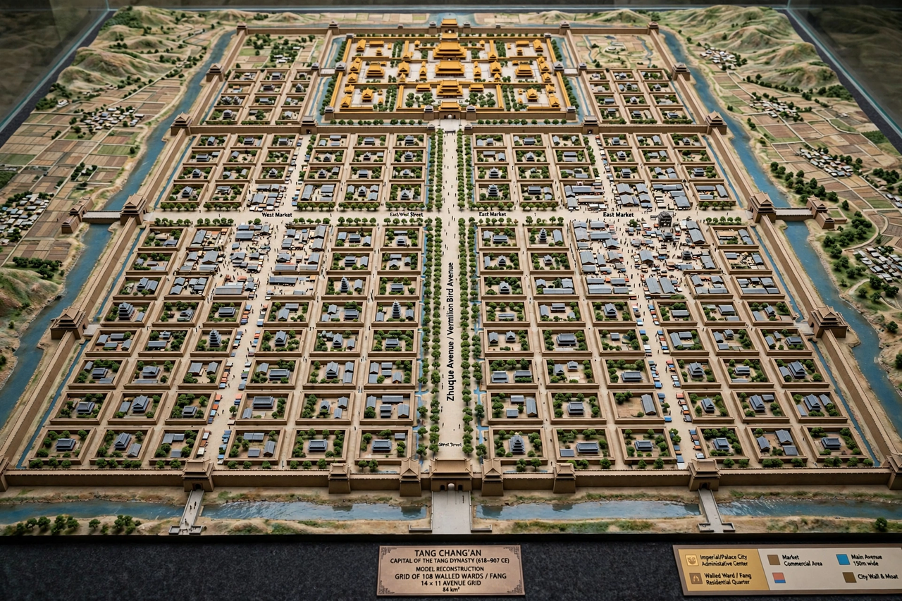

Chang'an

Location: modern Xi'an, Shaanxi, China
Role: capital of Han, Sui and Tang dynasties (among others)
Tang population: c. 1 million within the walls — among the world's largest cities
Chang'an was the capital city of several Chinese dynasties, located on the site of modern Xi'an. Under the Han (206 BCE–220 CE) and especially the Tang (618–907) it was one of the largest and most cosmopolitan cities on Earth, the eastern terminus of the Silk Road, and a model for capital planning across East Asia.
Han Chang'an
Liu Bang, founder of Han, established his capital here in 202 BCE. Han Chang'an, north of the modern city, was enclosed by great walls with palace complexes — Weiyang and Changle — occupying much of its area; Weiyang Palace was the largest palace complex ever built in China. The city was sacked during Wang Mang's fall and demoted when the Eastern Han moved the capital to Luoyang.
Sui and Tang Chang'an
The Sui founder Yang Jian built a new capital, Daxing, southeast of the Han city in 582; the Tang renamed it Chang'an. The planned city was a near-perfect rectangle of about 84 km², divided by a broad central avenue into 108 walled wards, with eastern and western markets, the imperial city and palace in the north, and temples of every religion along the Silk Road — Nestorian Christian, Zoroastrian, Manichaean, Buddhist and Daoist. With suburbs, its population approached two million by some estimates. Japanese capitals at Nara and Kyoto were modelled on its grid.
Decline
Chang'an suffered during the An Lushan Rebellion and later upheavals; after the Tang fell in 907 the capital moved east permanently, and the great city shrank to a regional centre within a fraction of the Tang walls — today's Xi'an.
Legacy
The Giant Wild Goose Pagoda, built for the monk Xuanzang's translated scriptures, survives. Chang'an's name remains a byword in Chinese poetry for the imperial capital and its splendours.
See also: Tang dynasty · An Lushan Rebellion · History of China